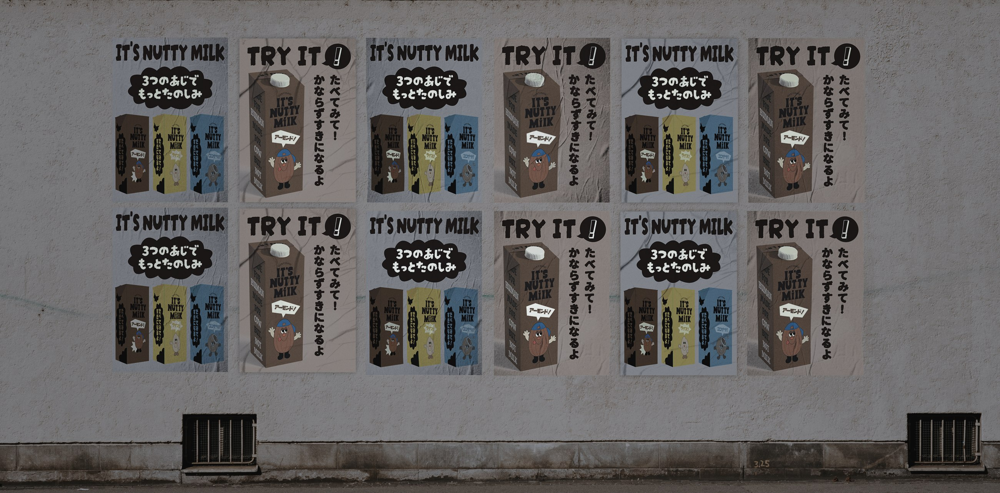

Made for human, made for cow, but not milk.
2023

CONCEPT
私が制作したのは、牛乳の代替飲料である植物性ミルク「IT'S NUTTY MILK」のブランディングデザインです。
植物性ミルクは、乳製品が体質に合わない人や、環境問題、動物福祉に関心を持つ人など、さまざまな理由から選ばれています。しかし、一般的な牛乳と比べると、植物性ミルクはまだ身近な飲み物として十分に認知されていないと感じていました。また、市販されている商品の中には、原料となるナッツや植物の写真を中心としたデザインも多く、味の違いや商品の個性が直感的に伝わりにくいという課題があると考えました。
そこで私は、植物性ミルクを単なる牛乳の代用品としてではなく、味を選ぶ楽しさや、飲むことによって気分が明るくなるような魅力を持った商品として表現したいと考えました。健康や環境への配慮といった機能的な価値だけでなく、パッケージを見た瞬間に興味を持ち、思わず手に取りたくなるような、親しみやすく自由なブランドを目指しました。
DESIGN EXPERIENCE
ブランド全体のビジュアルコンセプトには、落書きを意味する「ラクガキ」を取り入れました。グラフィティの持つ自由でエネルギッシュな印象を参考に、既存の植物性ミルクに多く見られるナチュラルで落ち着いたイメージとは異なる表現を試みました。ロゴには、手描きのような不規則さと力強さを感じられるフォントを採用し、文字そのものがブランドの個性として伝わるように設計しました。
また、アーモンド、ココナッツ、ライスという3種類の原料を、それぞれ異なるキャラクターとして表現しました。パッケージにキャラクターを取り入れることで、原料の違いを視覚的に伝えると同時に、商品に親しみやすさと遊び心を加えています。色やキャラクターを手がかりに、消費者がその日の気分に合わせて好みの味を選べるよう、3種類の商品に統一感を持たせながら、それぞれの個性を区別しました。
さらに、商品パッケージだけでなく、ポスターや展示用グラフィックにも同じビジュアルルールを展開し、ブランドの世界観が一貫して伝わるようにしました。商品を紹介するポスターでは3種類のパッケージを並べてシリーズとしての統一感を示し、別のポスターでは商品を大きく配置して、キャッチコピーとともに商品の魅力を強調しました。媒体ごとに情報の見せ方を変えながら、ロゴ、色、キャラクターを共通の要素として使用することで、ブランド全体の認識につながるデザインを目指しました。
ブランドのメッセージには「Made for human, made for cow, but not milk.」というスローガンを設定しました。牛乳を生産するために行われる酪農の仕組みや動物福祉の問題にも目を向け、植物性ミルクを選ぶことが、人間のためだけではなく、動物や環境について考えるきっかけにもなることを伝えたいと考えました。商品の楽しさを前面に出しながら、その背景にある社会的なテーマも感じ取れるよう、スローガンをパッケージやポスターに組み込みました。
制作を通して、商品の機能や特徴を説明するだけでなく、ロゴ、キャラクター、色彩、コピーを組み合わせることで、商品に対する印象そのものをデザインできることを学びました。一方で、現段階ではキャラクターの造形がまだ十分に定まっておらず、ロゴの持つグラフィティらしい力強さとの間に、少し違和感が残っています。今後はキャラクターの形や表情、線のタッチを見直し、ロゴからパッケージまで、より一貫したビジュアル表現へと発展させていきたいと考えています。